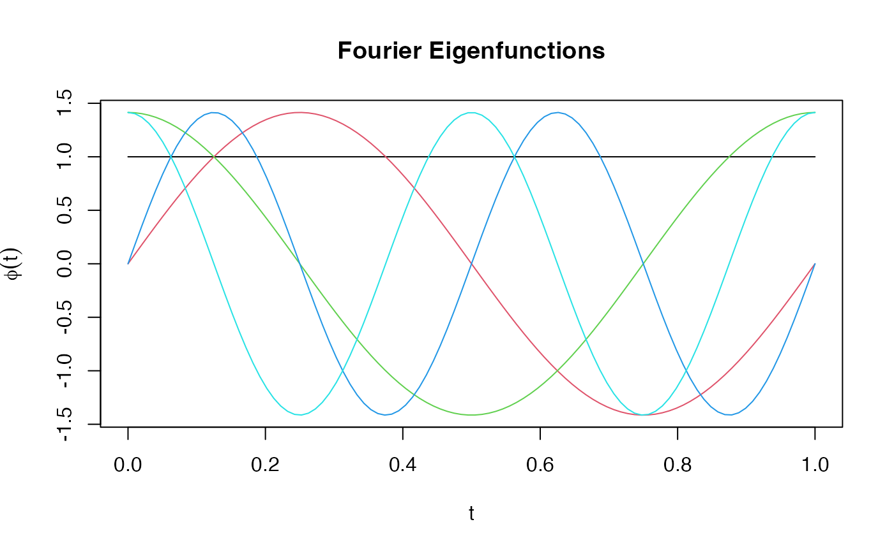
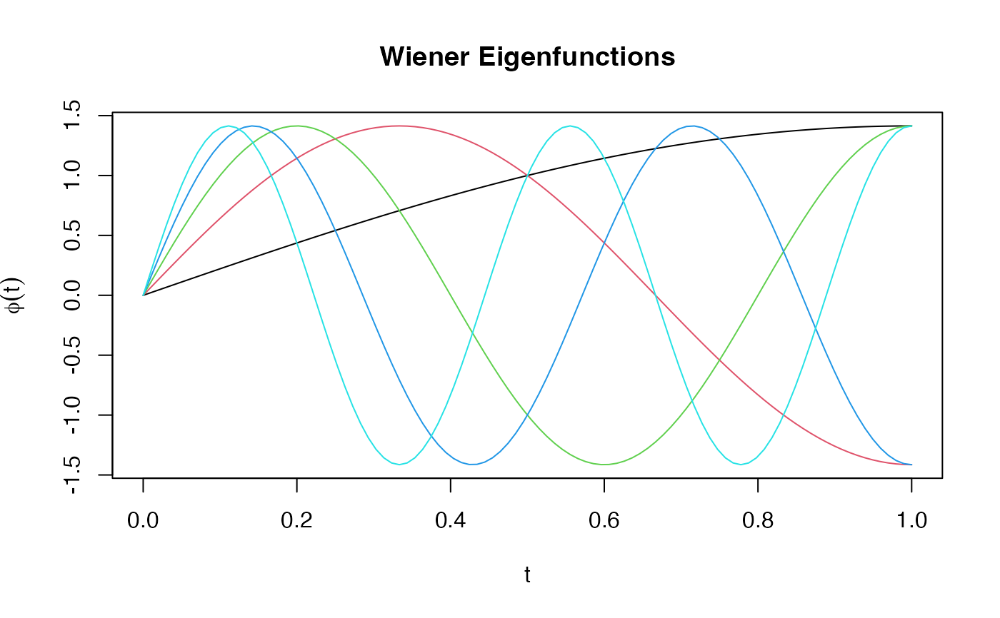

Evaluates orthonormal eigenfunction bases at specified argument values. These eigenfunctions can be used for Karhunen-Loeve simulation.
Usage
eFun(argvals, M, type = c("Fourier", "Poly", "PolyHigh", "Wiener"))Arguments
- argvals
Numeric vector of evaluation points in [0, 1].
- M
Number of eigenfunctions to generate.
- type
Character. Type of eigenfunction system:
- Fourier
Fourier basis: 1, sqrt(2)sin(2pikt), sqrt(2)cos(2pikt)
- Poly
Orthonormal Legendre polynomials of degrees 0, 1, ..., M-1
- PolyHigh
Orthonormal Legendre polynomials starting at degree 2
- Wiener
Wiener process eigenfunctions: sqrt(2)*sin((k-0.5)pit)
Value
A matrix of dimension length(argvals) x M containing the
eigenfunction values. Each column is an eigenfunction, normalized to
have unit L2 norm on [0, 1].
Details
The eigenfunctions are orthonormal with respect to the L2 inner product:
integral(phi_j * phi_k) = 1 if j == k, 0 otherwise.
- Fourier
Suitable for periodic data. First function is constant.
- Poly
Orthonormalized Legendre polynomials. Good for smooth data.
- PolyHigh
Legendre polynomials starting at degree 2, useful when linear and constant components are handled separately.
- Wiener
Eigenfunctions of the Brownian motion covariance. Eigenvalues decay as 1/((k-0.5)*pi)^2.
Examples
t <- seq(0, 1, length.out = 100)
# Generate Fourier basis
phi_fourier <- eFun(t, M = 5, type = "Fourier")
matplot(t, phi_fourier, type = "l", lty = 1,
main = "Fourier Eigenfunctions", ylab = expression(phi(t)))

# Generate Wiener eigenfunctions
phi_wiener <- eFun(t, M = 5, type = "Wiener")
matplot(t, phi_wiener, type = "l", lty = 1,
main = "Wiener Eigenfunctions", ylab = expression(phi(t)))

# Check orthonormality (should be identity matrix)
dt <- diff(t)[1]
gram <- t(phi_fourier) %*% phi_fourier * dt
round(gram, 2)
#> [,1] [,2] [,3] [,4] [,5]
#> [1,] 1.01 0 0.01 0 0.01
#> [2,] 0.00 1 0.00 0 0.00
#> [3,] 0.01 0 1.02 0 0.02
#> [4,] 0.00 0 0.00 1 0.00
#> [5,] 0.01 0 0.02 0 1.02